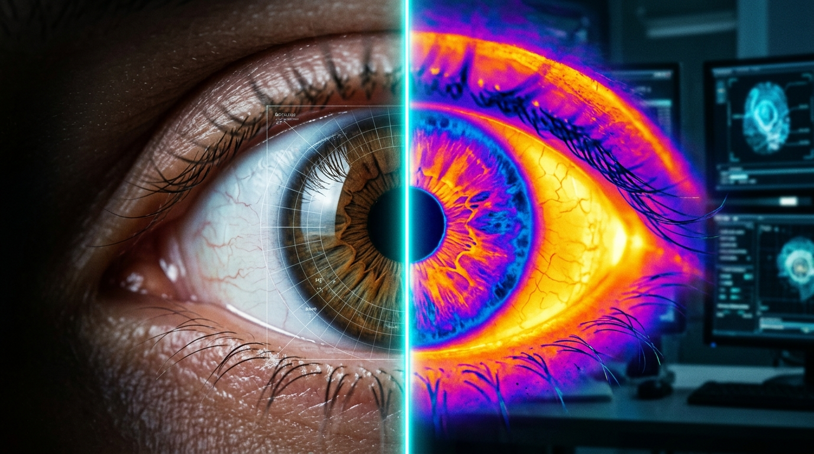

Dry Eye AI Detection System
High-resolution anterior segment thermography & automated 7-day clinical ocular screening.

Clinical Screening Protocol (Past 7 Days)
Answer 7 clinical symptom questions to calculate your standardized OSDI Index, symptom laterality (OD/OS), and tear film deficiency risk.
⚡ 7 Questions • Standardized 0–100 OSDI Scoring • Laterality Analysis
Instructions: Please consider your eye-related symptoms during the past 7 days and select the response that best reflects how frequently you experienced each symptom.
How often have you experienced gritty, painful, or sore eyes?
Upload Close-Up Eye Image
Upload an anterior segment or eye photograph for corneal reflection & tear surface verification.
Drag & drop or browse photo
Supports JPG, PNG (Max 10MB)
Analyzing Ocular Health...
Quantifying 7-day symptom responses, laterality, and ocular surface indices...